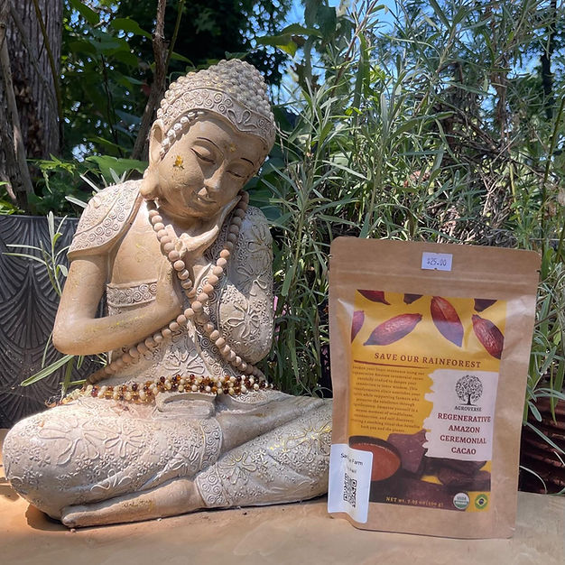
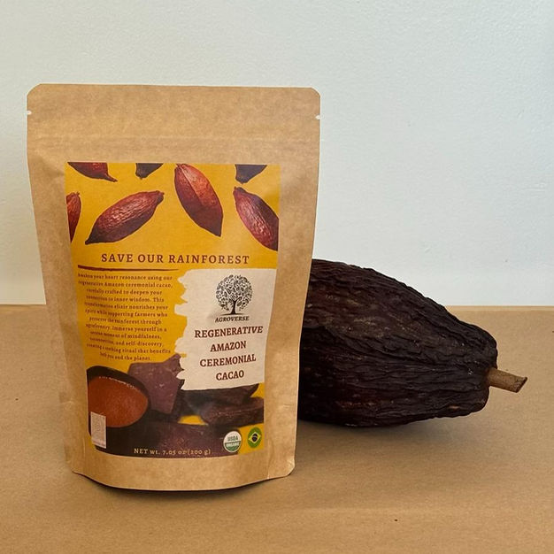
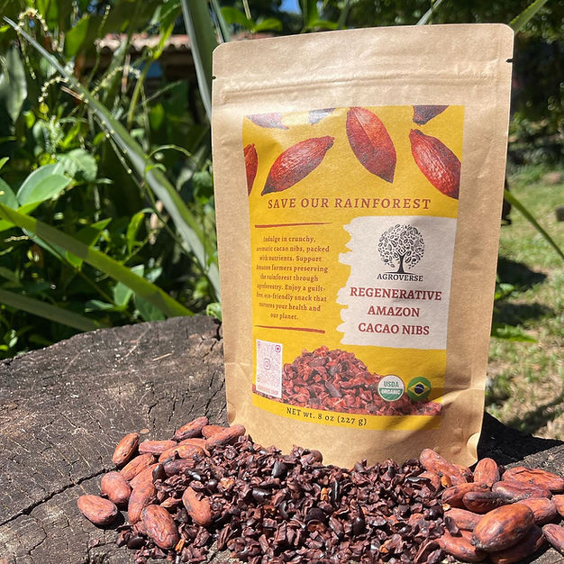
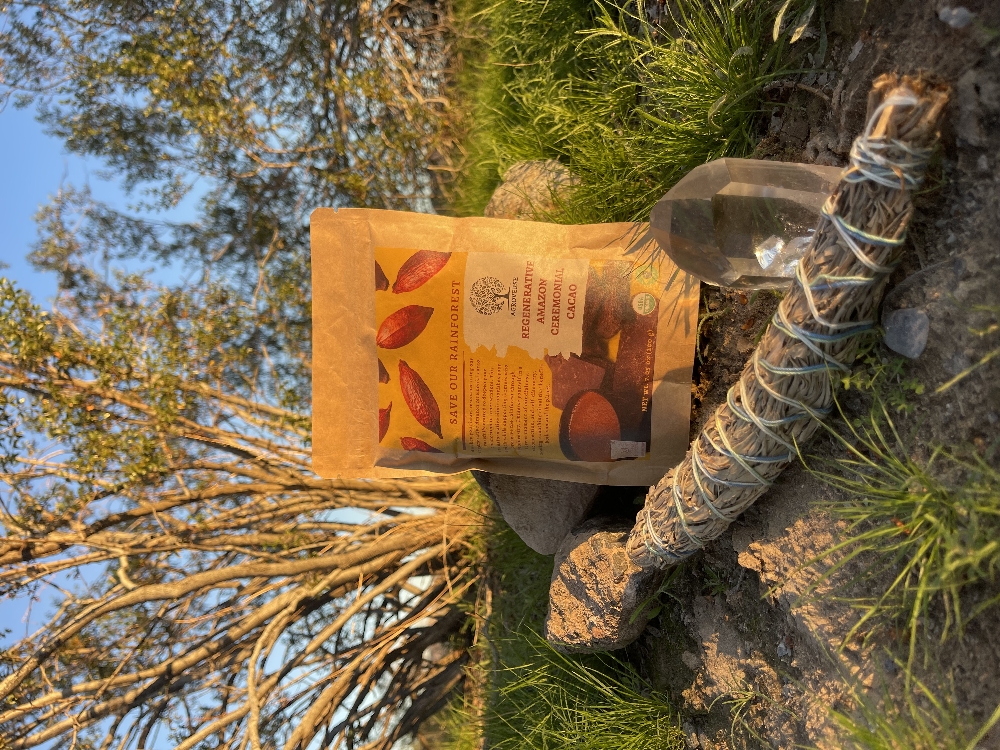
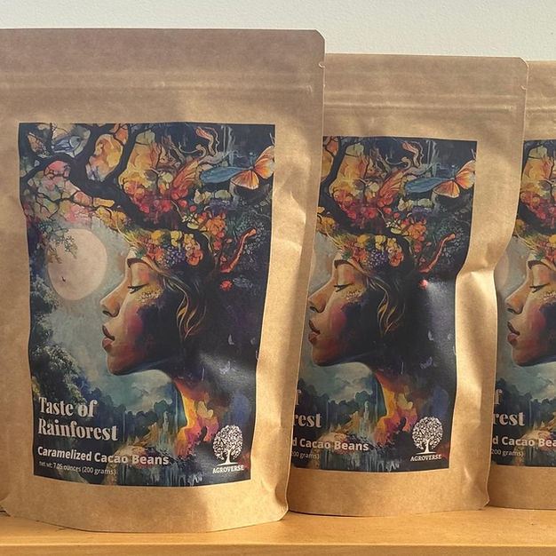

Cacao Minerals, Wellness Context, and Bean Uses: A Deep Dive

Cacao (Theobroma cacao) is famous for flavor, ritual, and theobromine—but it is also a surprisingly rich mineral source compared with many everyday foods. Those minerals do not work in isolation: they interact with fiber, fat, polyphenols, and how the bean is fermented, roasted, and prepared.
This article goes deep on which minerals show up in cacao, what those nutrients typically do in human physiology (in general terms), why numbers vary so much between powder, nibs, paste, and origin, and many ways people use the bean—from ceremonial drink to tea, baking, and craft chocolate. We’ll also connect the dots to single-estate sourcing and terroir, because the same factors that shape flavor shape micronutrient profiles.
Important: This is educational content, not medical advice. Mineral needs differ by age, health status, medications, and diet. If you have a medical condition or take prescriptions (especially for blood pressure, heart rhythm, mood, or iron overload), speak with a qualified clinician before changing what you eat or drink.
Why Mineral Levels “Move Around” in Cacao
Published values for cacao products vary widely. That is normal. Reasons include:
- Variety and genetics — Criollo, Forastero, Trinitario, and local landraces differ in uptake and seed composition.
- Soil and terroir — Volcanic, clay, and forest soils carry different mineral availability; see our terroir piece for how place shapes the bean.
- Fermentation and drying — Microbial activity and moisture loss redistribute soluble fractions; ash and mineral reports depend on lab method.
- Roast level and fat content — Cocoa butter is low in minerals; defatted cocoa powder concentrates minerals per gram compared with whole-bean preparations.
- What you actually eat — Ceremonial paste includes fat and fiber from the whole nib; “hot cocoa” mixes often add sugar and milk, diluting cacao per cup.


Major Minerals in Cacao (and What They “Do” in the Body)
The table below summarizes minerals commonly highlighted in food-composition literature for unsweetened cocoa / cacao products. Amounts are approximate ranges per 100 g of product as typically analyzed—not a guarantee for any single bar or bag. Your serving might be 15–40 g of ceremonial paste, or 5–15 g of powder, so scale accordingly.
| Mineral | Typical ballpark in cacao / cocoa powder (per 100 g)* | Roles in the body (general) | Notes for cacao eaters |
|---|---|---|---|
| Magnesium (Mg) | Often among the highest in plant foods—commonly cited roughly ~200–500 mg / 100 g for cocoa powder (highly variable) | Involved in hundreds of enzymatic reactions; contributes to normal muscle and nerve function, energy metabolism, and bone health as part of overall nutrition. | Whole-bean / paste servings still contribute meaningful Mg in the context of a day’s intake—especially if you use cacao regularly. |
| Potassium (K) | Often ~500–1,500+ mg / 100 g depending on product | Major electrolyte; central to fluid balance, nerve signaling, and muscle contraction in healthy physiology. | Relevant if you track electrolytes; chocolate with lots of added salt is a different product than plain cacao. |
| Phosphorus (P) | Often ~300–800 mg / 100 g | Structural role in bones and teeth; part of ATP (cellular energy currency) and many regulatory molecules. | People with advanced kidney disease often manage phosphorus carefully—another reason to treat cacao as food to discuss with a clinician if that applies. |
| Calcium (Ca) | Moderate—often ~50–150 mg / 100 g | Bone structure, muscle function, signaling. | Cacao is not usually a “calcium food” compared with dairy or fortified plants, but it contributes to the overall pattern of a meal plan. |
| Iron (Fe) | Often ~3–15 mg / 100 g (non-heme) | Component of hemoglobin and many enzymes; supports oxygen transport when intake and absorption are adequate. | Plant iron is non-heme; absorption improves with vitamin C–rich foods. Some people need monitored iron intake (overload disorders)—personalized guidance matters. |
| Zinc (Zn) | Often roughly ~3–7 mg / 100 g | Immune function, protein synthesis, wound healing, taste perception—broadly distributed roles. | Phytates in some plant foods can affect absorption; variety in diet usually matters more than any one food. |
| Copper (Cu) | Often roughly ~1–4 mg / 100 g | Iron metabolism, connective tissue, energy production. | Trace mineral—small amounts, easily impacted by overall diet quality. |
| Manganese (Mn) | Often roughly ~2–5 mg / 100 g | Bone formation, metabolism of amino acids, carbohydrates, lipids; part of antioxidant enzyme systems. | Very high intakes from multiple supplements + diet warrant caution; food-first cacao is different from isolated megadoses. |
| Selenium (Se) | Trace—highly soil-dependent | Antioxidant enzymes (e.g., glutathione peroxidase), thyroid hormone metabolism. | Brazil is famous for selenium-rich soils in some regions, but cacao is not a standardized “selenium supplement.” |
* Ranges summarize multiple food-composition databases and peer-reviewed analyses; your lab report or supplier spec may differ. For flavor chemistry (not minerals), our partners at CIC help us document quality and sensory data per shipment.

Beyond Minerals: Context That Changes How You Experience Cacao
Minerals are only part of the story. Whole cacao also delivers:
- Theobromine — A methylxanthine related to caffeine; often described as a gentler, longer-lasting stimulant than coffee for many people (individual responses vary).
- Small amounts of caffeine — Usually far less per gram than coffee, but sensitive people still notice it.
- Polyphenols and flavonoids — Bitterness and astringency often track with these compounds; they are an active research area (correlation ≠ prescription).
- Fiber — Especially when you consume whole nibs or less-filtered paste; supports gut-friendly feeding of microbiota in the context of overall fiber intake.
- Cocoa butter — Fat carries aroma and mouthfeel; it dilutes “minerals per bite” compared with defatted powder but makes fat-soluble compounds more bioaccessible in some preparations.

Uses of the Cacao Bean (From Farm to Kitchen to Circle)
1. Ceremonial cacao drink (whole-bean paste)
Traditionally, whole cacao is stone-ground or milled into a paste, then whisked with hot water (sometimes spices, no dairy or minimal sweetener). This preserves a broad spectrum of bean components—fat, fiber, minerals, and polyphenols—in one cup. Our AGL4, AGL8, and other shipments are often enjoyed this way.
2. Cacao tea (husk / shell infusion)
The outer shell after winnowing can be steeped like an herbal tea—lighter in fat, still aromatic, with its own mineral and fiber profile (milder than nibs). We source shell-appropriate lots from farms such as Paulo's for tea-oriented products.
3. Nibs: topping, baking, savory applications
Roasted nibs add crunch to granola, salads, and mole-inspired dishes; they are essentially chopped seeds—concentrated cocoa solids plus fat.
4. Bean-to-bar and craft chocolate
Chocolate makers refine particle size, roast profile, and sugar percentage. A 70% bar is not the same nutrient delivery as unsweetened paste—still a delicious way to celebrate flavor diversity.
5. Cocoa powder (natural vs alkalized)
Dutch-process (“alkalized”) cocoa is darker and milder but can shift polyphenol and mineral availability compared with natural powder. For baking science nerds, which powder you choose changes both color and chemistry.
6. Cocoa butter
Pressed fat from the bean—prized in chocolate texture and skincare. It carries little mineral content compared with non-fat cocoa solids.
7. Traditional and modern beverages
From Mesoamerican spiced drinks to modern adaptogen blends, cacao is a carrier for culture and community. Dose and additives (sugar, milk, emulsifiers) determine whether you’re closer to “food” or “dessert.”


Practical Serving Ideas (Food-First, Not “Megadose”)
- Morning — Small cup of ceremonial cacao with citrus on the side (vitamin C can support non-heme iron context in meals).
- Afternoon — Nibs on yogurt with fruit; keeps added sugar low.
- Evening — Cacao tea or a lighter drink if you’re sensitive to theobromine/caffeine at night.
- Kitchen — Mole, chili, or oat bake with a spoon of natural cocoa for depth (watch total salt/sugar in the recipe).
Agroverse: Regenerative Farms, Traceable Lots
When minerals meet single-estate sourcing, you get something commodity blends rarely offer: a named place, known fermentation practices, and shipments you can follow from farm to cup. Explore our farms, current shipments, and stories like Bahia & Amazon origins.